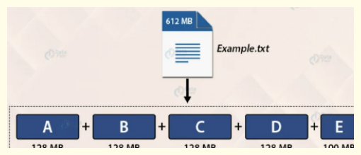

Hadoop Concepts
Hadoop¶

Hadoop is an open-source software framework for storing and processing big data in a distributed fashion on large clusters of commodity hardware. Essentially, it accomplishes two tasks: massive data storage and faster processing. It was developed by the Apache Software Foundation and is based on two main components:
-
Hadoop Distributed File System (HDFS): This is the storage component of Hadoop, designed to hold large amounts of data, potentially in the range of petabytes or even exabytes. The data is distributed across multiple nodes in the cluster, providing high availability and fault tolerance.
-
Map-Reduce: This is the processing component of Hadoop, which provides a software framework for writing applications that process large amounts of data in parallel. MapReduce operations are divided into two stages: the Map stage, which sorts and filters the data, and the Reduce stage, which summarizes the data.
-
Yet Another Resource Negotiator (YARN): This is the resource management layer in Hadoop. Introduced in Hadoop 2.0, YARN decouples the programming model from the resource management infrastructure, and it oversees and manages the compute resources in the clusters.
Properties of Hadoop¶
Scalability: Can store and distribute large data sets across many servers.
Cost-effectiveness: Designed to run on inexpensive, commodity hardware.
Flexibility: Can handle any type of data, structured or unstructured.
Fault Tolerance: Data is automatically replicated to other nodes in the cluster.
Data Locality: Processes data on or near the node where it's stored, reducing network I/O.
Simplicity: Provides a simple programming model (MapReduce) for processing data.
Open-source: Freely available to use and modify with a large community of contributors.
HDFS Architecture and Core Concepts¶
HDFS (Hadoop Distributed File System) is a distributed file system. It is designed using a master/slave architecture.
Hadoop Cluster Setup¶
A Hadoop cluster consists of multiple computers networked together.
Racks: A rack is a physical enclosure where multiple computers are fixed.Each rack typically has its individual power supply and a dedicated network switch. The importance of racks lies in the possibility of an entire rack failing if its switch or power supply goes out of network, affecting all computers within it. Multiple racks are connected, with their switches linked to a core switch, forming the Hadoop cluster.
Master/Slave Architecture: NameNode and DataNode¶
In HDFS, there is one master and multiple slaves.
-
NameNode (Master Node): The Hadoop master is called the NameNode. It is called NameNode because it stores and manages the names of directories and files within the HDFS namespace.
Responsibilities: Manages the file system namespace. Regulates access to files by clients (e.g., checking access permissions, user quotas). Maintains an image of the entire HDFS namespace in memory, known as in-memory FS image (File System Image). This allows it to perform checks quickly. Does not store actual file data. Assigns DataNodes for block storage based on free disk space information from DataNodes. Maintains the mapping of blocks to files, their order, and all other metadata.
-
DataNode (Slave Node): The Hadoop slaves are called DataNodes. They are called DataNodes because they store and manage the actual data of the files.
Responsibilities: Stores file data in the form of blocks. Periodically sends a heartbeat to the NameNode to signal that it is alive. This heartbeat also includes resource capacity information that helps the NameNode in making decisions. Sends a block report to the NameNode, which is health information about all the blocks maintained by that DataNode.
Key terminologies and Components of HDFS¶
Block¶

Block is nothing but the smallest unit of storage on a computer system. It is the smallest contiguous storage allocated to a file. In Hadoop, we have a default block size of 128MB or 256MB. If you have a file of 50 MB and the HDFS block size is set to 128 MB, the file will only use 50 MB of one block. The remaining 78 MB in that block will remain unused, as HDFS blocks are allocated on a per-file basis. It's important to note that this is one of the reasons why HDFS is not well-suited to handling a large number of small files. Since each file is allocated its own blocks, if you have a lot of files that are much smaller than the block size, then a lot of space can be wasted. This is also why block size in HDFS is considerably larger than it is in other file systems (default of 128 MB, as opposed to a few KBs or MBs in other systems). Larger block sizes mean fewer blocks for the same amount of data, leading to less metadata to manage, less communication between the NameNode and DataNodes, and better performance for large, streaming reads of data.
Replication Management¶
To provide fault tolerance HDFS uses a replication technique. In that, it makes copies of the blocks and stores in on different DataNodes. Replication factor decides how many copies of the blocks get stored. It is 3 by default but we can configure to any value.
Rack Awareness¶
A rack contains many DataNode machines and there are several such racks in the production. HDFS follows a rack awareness algorithm to place the replicas of the blocks in a distributed fashion. This rack awareness algorithm provides for low latency and fault tolerance. Suppose the replication factor configured is 3. Now rack awareness algorithm will place the first block on a local rack. It will keep the other two blocks on a different rack. It does not store more than two blocks in the same rack if possible.
Secondary Namenode¶
The Secondary NameNode in Hadoop HDFS is a specially dedicated node in the Hadoop cluster that serves as a helper to the primary NameNode, but not as a standby NameNode. Its main roles are to take checkpoints of the filesystem metadata and help in keeping the filesystem metadata size within a reasonable limit.
Here is what it does:
-
Checkpointing: The Secondary NameNode periodically creates checkpoints of the namespace by merging the fsimage file and the edits log file from the NameNode. The new fsimage file is then transferred back to the NameNode. These checkpoints help reduce startup time of the NameNode
-
Size management: The Secondary NameNode helps in reducing the size of the edits log file on the NameNode. By creating regular checkpoints, the edits log file can be purged occasionally, ensuring it does not grow too large.
A common misconception is that the Secondary NameNode is a failover option for the primary NameNode. However, this is not the case; the Secondary NameNode cannot substitute for the primary NameNode in the event of a failure. For that, Hadoop 2 introduces the concept of Standby NameNode.
Standby Namenode¶
In Hadoop, the Standby NameNode is part of the High Availability (HA) feature of HDFS that was introduced with Hadoop 2.x. This feature addresses one of the main drawbacks of the earlier versions of Hadoop: the single point of failure in the system, which was the NameNode.
-
The Standby NameNode is essentially a hot backup for the Active NameNode. The Standby NameNode and Active NameNode are in constant synchronization with each other. When the Active NameNode updates its state, it records the changes to the edit log, and the Standby NameNode applies these changes to its own state, keeping both NameNodes in sync.
-
The Standby NameNode maintains a copy of the namespace image in memory, just like the Active NameNode. This means it can quickly take over the duties of the Active NameNode in case of a failure, providing minimal downtime and disruption.
-
Unlike the Secondary NameNode, the Standby NameNode is capable of taking over the role of the Active NameNode immediately without any data loss, thus ensuring the High Availability of the HDFS system.